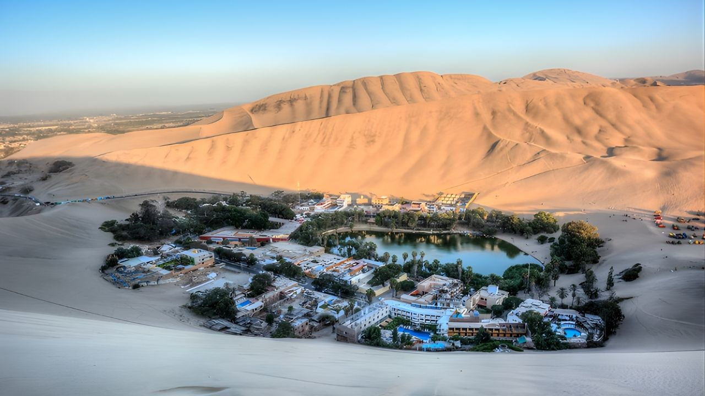
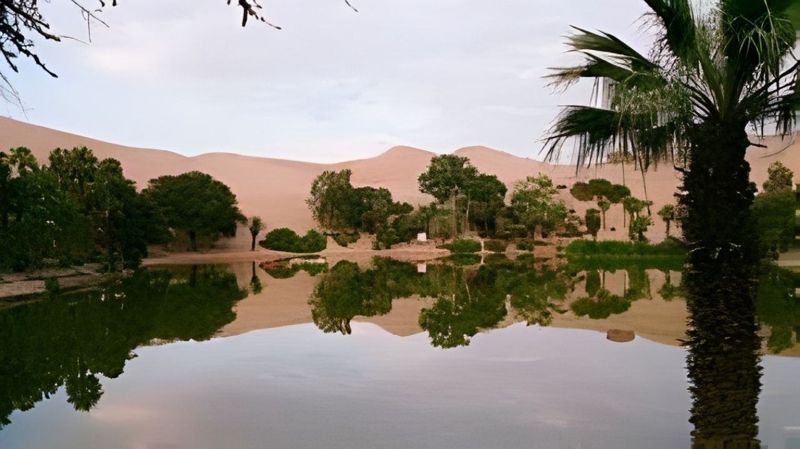

Tour Viñedo Museo Oasis


Descubre la región vinícola de Perú y disfruta de emocionantes aventuras en buggy en las dunas de Huacachina.
Capital del vino de Perú, Huacachina y aventuras de infarto en buggy.
Detalle
La región es la capital vinícola de Perú y el centro mundial del Pisco, hogar de las bodegas más grandes del país, tanto tradicionales como industriales. Los tours a menudo incluyen lugares de renombre como El Catador y Caravedo. A solo 5 km al suroeste de Ica se encuentra Huacachina, un pintoresco pueblo turístico que rodea un oasis natural. Es un refugio popular para viajeros, que ofrece relajación y algunas de las mejores experiencias de sandboard del mundo. Para aquellos que no se inclinan por los deportes extremos, un paseo en buggy por las inmensas dunas circundantes proporciona vistas impresionantes y es una visita obligada al visitar la zona.
Incluye:
- Recojo de tu hotel en Ica o Huacachina.
- Transporte privado.
- Visita a los viñedos de pisco.
- Visita guiada al Museo Arqueológico de Ica.
- Visita al Oasis de Huacachina.
- Todas las entradas.
- Guía de habla inglesa/hispana.
No Incluye:
- Extras y propinas.
- Alojamiento.
Precio:
$25
Reservar Ahora